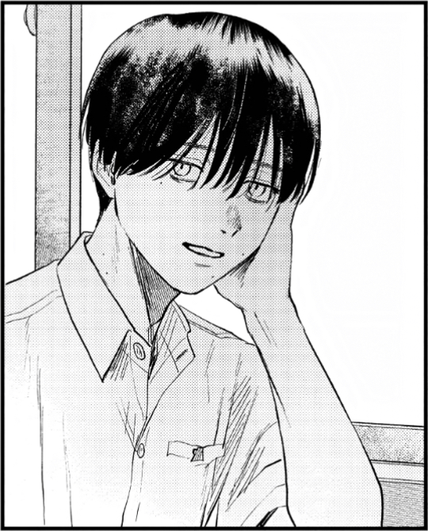
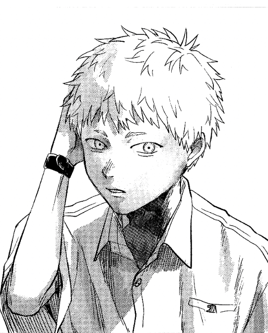
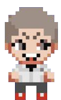
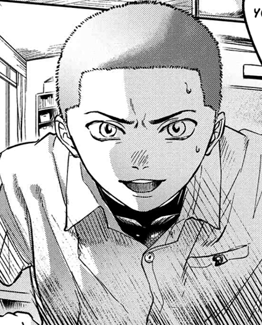
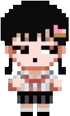
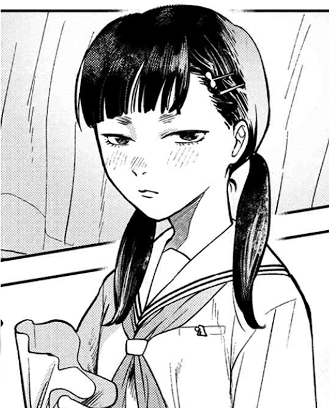
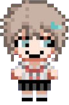
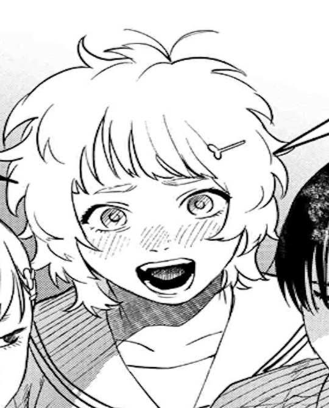

Yoshiki Tsujinaka (辻中佳紀) is an ordinary high school student living in a quiet rural village surrounded
by mountains. Yoshiki is known for being calm, reserved, and loyal — especially to his childhood friend, Hikaru.
In the real world, he lives alone with his mother after his father passed away when he was young.
After a mysterious event causes the death of the real Hikaru, Yoshiki finds himself facing a terrifying truth — the "Hikaru" who returned is no
longer human. Despite knowing this, Yoshiki chooses to stay by its side, struggling with fear, confusion, and lingering attachment to the memories
of his lost friend.
Yoshiki is often seen wearing his school uniform and has a habit of quietly observing his surroundings. While he doesn’t possess any special abilities,
his emotional strength and determination to protect what
remains of Hikaru set him apart. His story revolves around confronting grief, accepting loss, and surviving in a world slowly being consumed by something
inhuman.


Hikaru Indou (忌堂光) was Yoshiki Tsujinaka’s childhood friend — an ordinary boy who grew up alongside him in the same quiet rural village surrounded
by mountains. Cheerful, friendly, and sometimes mischievous, Hikaru was someone who brought warmth to Yoshiki’s otherwise quiet life.
However, after a tragic and mysterious event deep within the mountains, the real Hikaru died. In his place, something returned — a being that looks,
speaks, and acts like Hikaru, but is no longer human. Its presence marks the beginning of unnatural events spreading through the village
— blurring the line between life and death, friend and monster.
While "Hikaru" retains the appearance of a normal high school boy, an eerie, otherworldly aura surrounds him — a constant reminder that he is no longer
part of the world he once belonged to.
"Are you still Hikaru... or something else entirely?"


Yuuta Maki (牧ユウタ) is a classmate of Yoshiki Tsujinaka and a resident of the same remote mountain village. Outspoken, direct, and sometimes abrasive,
Maki carries a sharp personality that contrasts with the quiet and reserved nature of Yoshiki.
Unlike most of their classmates, Maki is quick to notice the subtle unnaturalness surrounding "Hikaru" after his return. His instincts tell him that
something is deeply wrong — both with Hikaru and with the village itself.
Despite his rough attitude, Maki shows genuine concern for those around him — willing to confront danger head-on if it means protecting others.
As the veil between the human world and the unknown grows thinner, Yuuta Maki finds himself drawn deeper into a terrifying mystery far beyond his control.
"People like me... we notice when something doesn’t belong here."


Yuuki Tadokoro (田所優希) is a cheerful and friendly classmate of Yoshiki Tsujinaka. Living in the same quiet mountain village,
she embodies the ordinary, peaceful life that Yoshiki struggles to hold onto as his world begins to unravel.
Often surrounded by friends and laughter, Tadokoro represents everything normal — school life, small conversations, and youthful innocence untouched
by the horrors lurking in the shadows.
While unaware of the terrifying truth behind "Hikaru," her presence serves as a painful reminder of what Yoshiki stands to lose — the warmth of human
connection in a world slowly being overtaken by something inhuman.
"Yoshiki-kun, are you okay? You’ve been acting kinda distant lately..."


Asako Yamagishi (山岸浅子) is a quiet and sharp-minded student who attends the same school as Yoshiki Tsujinaka and Hikaru Indou.
Reserved and perceptive, she tends to keep her distance from others — quietly observing the people and strange happenings around her.
Unlike most of her classmates, Yamagishi possesses an unusual sense of awareness. She notices what others overlook — small inconsistencies,
odd behaviors, and the quiet tension that surrounds Yoshiki and "Hikaru."
Though she rarely voices her thoughts, her sharp gaze suggests that she knows more than she lets on — or at the very least, feels the presence of something
that doesn’t belong in their world.
"This village... something about it feels wrong lately."